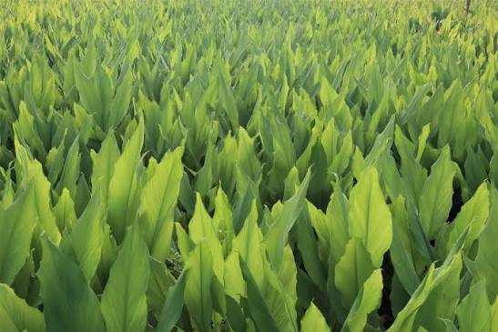

For bulk product enquiries and sourcing conversations, contact GUDDA FARM directly.
Best starting point for product and bulk buyer enquiries.
GUDDA FARM is rooted in Karnataka’s agricultural landscape.
